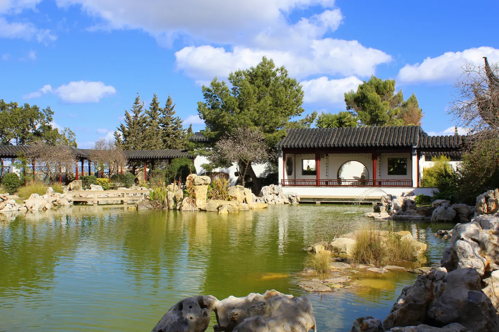
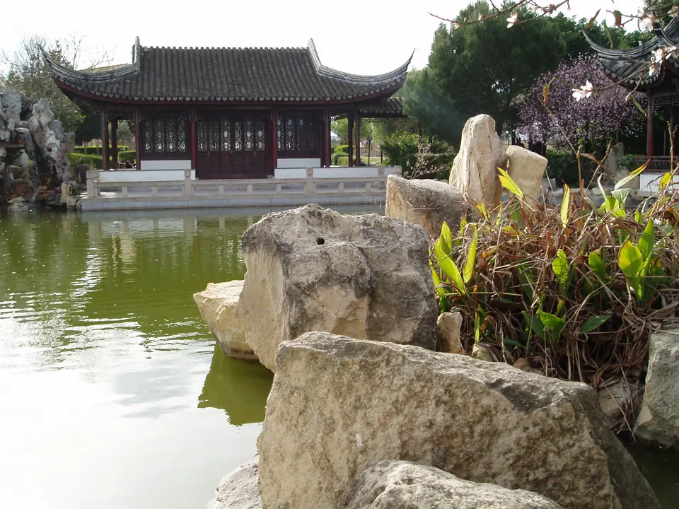

Buses and daily travel
Route 83 lists Gardenja, Begonia and Oleandri among its Santa Luċija stops. Which stop makes sense depends on the direction of travel and the street you need.
Malta · Southern Region
A parish square anchors the residential streets. Along the edge of the neighbourhood, planted gardens make room for a different pace.

Landscape and local life
The Garden of Serenity sits along the green belt. The council lists Katerina Vitale Street as the garden address. Check posted hours and paths on arrival. Water, stone and covered pavilions shape the garden’s layout.
Next door, Ġnien l-Iskultura is a separate space announced in May 2025. An iron bridge and koi pond feature in its design. Ġnien Sembjożi is an earlier garden project in the neighbourhood. Each has its own name and place.
For the residential centre, look to Pjazza 7 ta’ Lulju and the parish church of St Pius X. The square and garden are useful reference points when looking up an address. Santa Luċija on Malta is a separate locality from the same-named area of Ta’ Kerċem on Gozo.

Everyday connections
The park entrance, parish square, bus stops and clinic are different destinations. Choose the exact address when planning a trip or comparing places to live.
Route 83 lists Gardenja, Begonia and Oleandri among its Santa Luċija stops. Which stop makes sense depends on the direction of travel and the street you need.
Primary HealthCare lists the community clinic on Triq Oleander and places the locality in the Paola catchment. Confirm appointment and service location. The local football club publishes its own information.
The MTA register places Big Bite Take Away & Pizzeria on Vjal Santa Luċija in neighbouring Paola. Confirm trading hours and menus directly before making a special trip.
The marker shows the garden area. For entry, use the council’s Katerina Vitale Street reference and follow on-site signs.
Map data © OpenStreetMap contributors.
Sources reviewed 16 November 2026. The locality name follows the Address Registrar. Local council and parks information covers the garden, and the government notice documents the separate sculpture garden.